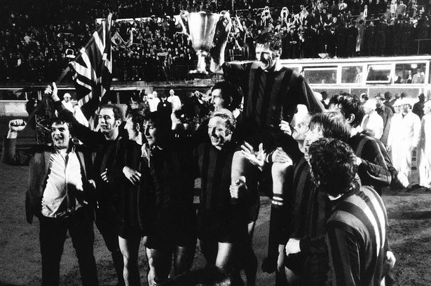
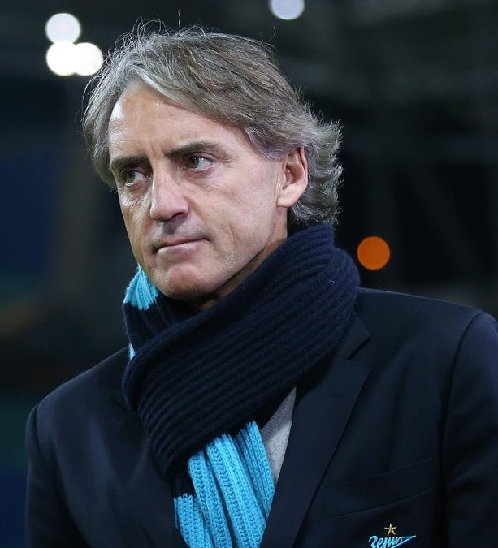
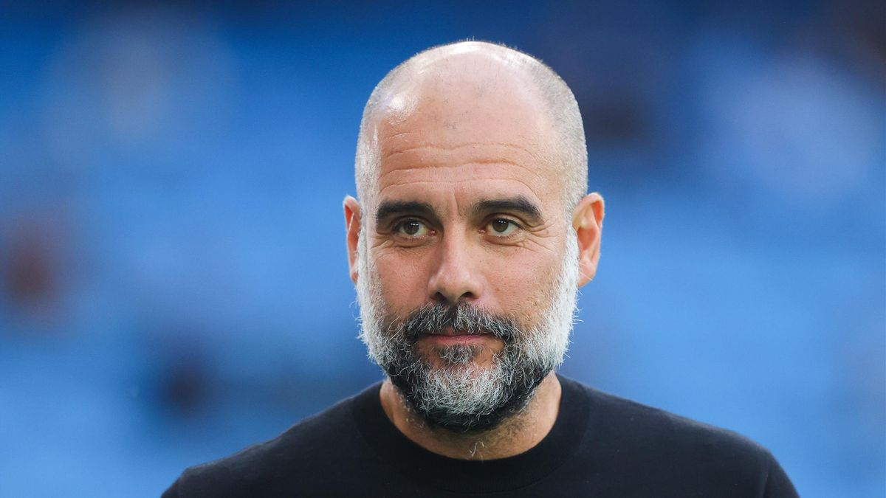
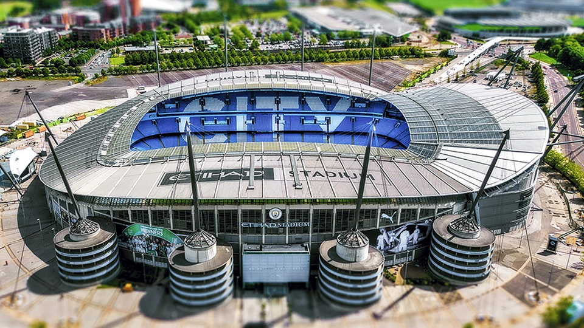

Nel 1892, l'associazione si unì alla Football League inglese come Ardwick A.F.C., uno dei membri fondatori della Second Division, all'epoca secondo livello del calcio inglese. Le difficoltà finanziarie durante la stagione 1893/94 portarono a una ristrutturazione completa e a un cambio di nome in Manchester City, con registrazione presso il registro delle imprese come Manchester City Football Club Limited il 16 aprile 1894. Con la vittoria del campionato di seconda divisione nel 1899, il club ha ottenuto il suo primo successo. Nel 1904 seguì il primo grande titolo con la vittoria finale contro i Bolton Wanderers nella FA Cup. Nel 1923, il Manchester City si trasferì nel suo nuovo stadio, situato a Maine Road a Moss Side, a Manchester. Questo si trovava a sud di Manchester e quindi lontano dalla sua precedente casa a est della città, motivo per cui membri e tifosi insoddisfatti fondarono nel 1928 il Manchester Central, un club proprio.
Il Manchester City ha vinto il suo primo campionato inglese nel 1937. La finale di FA Cup del 1956, in cui il Manchester City ha battuto il Birmingham City per 3-1, è considerata ancora oggi una delle finali più memorabili, poiché il portiere Bert Trautmann ha continuato a giocare nonostante avesse una frattura delle vertebre cervicali. Il secondo titolo di campione è arrivato nel 1968 e ha segnato l'inizio di un'era estremamente di successo, con il manager Joe Mercer, il suo assistente Malcolm Allison, il capitano Tony Book e gli attaccanti Francis Lee, Colin Bell e Mike Summerbee che hanno contribuito ad ampliare significativamente la collezione di trofei tra la fine degli anni '60 e l'inizio degli anni '70. Il successo europeo più significativo è stato la vittoria della Coppa delle Coppe nel 1970, quando la squadra ha sconfitto il rappresentante polacco Górnik Zabrze per 2-1 nella finale di Vienna.

L'epoca di successo e declino
Successivamente, il club affrontò un lungo periodo di insuccessi e il Manchester City retrocesse due volte dalla massima serie negli anni '80. Nonostante in questo periodo si sia ottenuto il quinto posto nella massima divisione per due anni consecutivi con il manager Peter Reid, ciò non cambiò la tendenza fondamentalmente negativa fino agli anni '90 e portò al punto più basso nel 1998, quando il club retrocesse addirittura in terza serie per la prima volta.
La retrocessione ha provocato grande agitazione al di fuori del campo e un nuovo presidente ha preso il controllo del club. Il City ha ottenuto la promozione al primo tentativo, dopo aver sconfitto il FC Gillingham in un drammatico play-off. Allo stesso tempo, sono stati annunciati piani per il trasferimento in un nuovo stadio e per la prima volta da molto tempo si è diffusa un'atmosfera ottimistica. La promozione diretta in Premier League dopo solo una stagione di Championship si è rivelata prematura per il club ancora in ripresa e ha portato alla retrocessione nella stagione 2000/01. Kevin Keegan ha assunto la direzione tecnica della squadra e ha ottenuto un successo immediato, vincendo il campionato di Championship con un record di punti e gol segnati in una singola stagione. L'ultima stagione nello storico stadio del Maine Road è stata quindi disputata nella massima divisione. Uno dei momenti salienti della scorsa stagione nella vecchia sede del Maine Road, ormai demolita, è stato la vittoria per 3-1 nel derby contro il Manchester United dopo una rete di Nicolas Anelka e due gol di Shaun Goater, che ha interrotto una serie di 13 anni senza vittorie contro il principale rivale locale. Nel 2003, il Manchester City si trasferì nello stadio City of Manchester Stadium, una struttura di nuova costruzione presa in affitto dal club nella parte est di Manchester, con una capacità di 48.000 posti a sedere. La prima stagione nello nuovo stadio si concluse con il nono posto in classifica e la qualificazione alla Coppa UEFA tramite la regola del fair play dell'UEFA.
La proprietà Shinawatra
Nel 2007, l'ex controverso primo ministro della Thailandia Thaksin Shinawatra acquisì la maggioranza delle azioni del club. Nel settembre 2008 le vendette per circa 185 milioni di euro a una società di investimento dell'Emirato di Abu Dhabi. Negli anni successivi, il Manchester City ha registrato una rapida crescita.
La formazione della squadra di punta
La proprietà passò dunque all'Abu Dhabi United Group del principe emiratino Mansur bin Zayd Al Nahyan, che acquistò il club per utilizzarlo come canale per promuovere la compagnia aerea Etihad Airways. Mansur bin Zayd Al Nahyan divenne il presidente onorario del club, mentre il suo collaboratore Khaldoon Al Mubarak assunse la carica di presidente esecutivo. I nuovi proprietari dichiararono il proposito di rendere il Manchester City una delle società più importanti d'Europa e, a poche ore dalla fine del calciomercato estivo, condussero in porto l'operazione più costosa fino ad allora nella storia del club, pagando 42 milioni di euro per la stella brasiliana Robinho.

Roberto Mancini subentrò a metà della stagione 2009-2010 al Manchester City, portando la squadra al quinto posto e alla qualificazione in UEFA Europa League. Nell'estate 2010, il club effettuò una campagna acquisti ambiziosa, aggiungendo giocatori come David Silva, Mario Balotelli e altri. Nella stagione successiva, Mancini guidò il City alla vittoria della FA Cup, ponendo fine a un digiuno di trofei durato dal 1976, mentre in campionato si piazzò al terzo posto, qualificandosi per la UEFA Champions League dopo quarantasei anni. Nel 2011-2012, il City vinse il titolo di Premier League, il primo dopo quarantaquattro anni, grazie a una vittoria decisiva nell'ultimo turno contro il Queens Park Rangers. Nonostante la vittoria del Community Shield nel 2012, la sconfitta nella finale di FA Cup del 2012-2013 portò alla sostituzione di Mancini con Brian Kidd.
Manuel Pellegrini prese il comando del Manchester City e il club effettuò nuovi acquisti importanti dopo la partenza di Tévez, tra cui Fernandinho, Jesús Navas, Álvaro Negredo e Stevan Jovetić. Pellegrini vinse la Premier League e la Coppa di Lega nella sua prima stagione, mentre la successiva vide il City raggiungere la fase a eliminazione diretta della UEFA Champions League ma senza conquistare trofei. Pep Guardiola prese il timone nel 2016 e portò il City a vincere la Coppa di Lega e la Premier League nel 2017-2018, stabilendo un record di 100 punti. La stagione successiva il City fece la storia vincendo la Supercoppa d'Inghilterra, la Coppa di Lega, il titolo nazionale e la FA Cup, conseguendo il treble domestico. Nel 2020-2021, il City vinse nuovamente la Premier League e la Coppa di Lega, raggiungendo anche la finale della Champions League ma perdendo contro il Chelsea. Nella stagione seguente vinse di nuovo la Premier League e raggiunse le semifinali di Champions League.Nel 2022-2023 il Manchester City realizzò uno storico treble vincendo la Premier League, la Coppa d'Inghilterra e la UEFA Champions League, battendo l'Inter in finale. Nella stagione successiva vinse la Supercoppa UEFA e la Coppa del mondo per club FIFA per la prima volta nella sua storia.
Pep Guardiola
Josep Guardiola i Sala, detto Pep, nasce a Santpedor, 18 gennaio 1971, è un allenatore di calcio ed ex calciatore spagnolo, di ruolo centrocampista, tecnico del Manchester City.Da giocatore ha vinto sei campionati spagnoli, due Coppe di Spagna, quattro Supercoppe di Spagna, una UEFA Champions League, una Supercoppa UEFA e una Coppa delle Coppe UEFA con il Barcellona, oltre ad un oro olimpico con la nazionale spagnola.Diventato allenatore del Barcellona nel 2008, ha condotto la squadra alla vittoria di tre campionati, due coppe nazionali, tre Supercoppe di Spagna, due UEFA Champions League (divenendo il sesto a farlo sia da calciatore che da allenatore), due Supercoppe UEFA e due Coppe del mondo per club FIFA; con quattordici trofei vinti in quattro anni è l'allenatore più titolato della storia blaugrana. Dal 2013 al 2016 ha allenato il Bayern Monaco, con cui ha vinto una Supercoppa UEFA, una Coppa del mondo per club (raggiungendo in entrambi i casi il primato personale di vittorie nella competizione), tre campionati tedeschi e due Coppe di Germania.

Dal 2016 è alla guida del Manchester City, con cui ha vinto cinque Premier League, due FA Cup, quattro League Cup, due Community Shield, una UEFA Champions League, una Supercoppa UEFA e una Coppa del mondo per club FIFA.Considerato uno dei migliori allenatori di tutti i tempi, nel 2011 e nel 2023 si è aggiudicato rispettivamente il FIFA World Coach of the Year e il The Best FIFA Football Coach tra gli allenatori di calcio maschile; inoltre, è stato eletto per tre volte Allenatore dell'anno IFFHS (2009, 2011 e 2023). Nel 2020 è stato nominato Allenatore del secolo (2001-2020) ai Globe Soccer Awards. Con 38 trofei vinti è il secondo allenatore più vincente della storia dietro ad Alex Ferguson (49)
Stadio

Prima di essere demolito nel 2004, Maine Road ha ospitato le partite casalinghe del Manchester City per 80 anni. Quando fu inaugurato lo stadio era il più grande impianto sportivo di un club calcistico in Inghilterra e il secondo nel paese dopo il Wembley Stadium. Il record di affluenza a Maine Road fu registrato nel 1934, quando 84.569 spettatori assistettero all'incontro di FA Cup tra il Manchester City e lo Stoke City. La stagione 2002-2003 fu l'ultima del Manchester City al Maine Road, con l'ultimo match che fu giocato l'11 maggio 2003.

Nella stagione seguente il Manchester City cominciò a giocare nel nuovo impianto, il City of Manchester Stadium, stadio di nuova costruzione con ben 48 000 posti a sedere, realizzato per ospitare i giochi del Commonwealth. La società spese circa 35 milioni di sterline per alcuni lavori sul nuovo stadio, compresa la costruzione della North Stand. Il nuovo stadio fu inaugurato con una vittoria per 2-1 sul Barcellona, con gol di Nicolas Anelka e Trevor Sinclair. L'8 luglio 2011 il Manchester City raggiunse un accordo con la Etihad Airways, cedendo alla compagnia i diritti per il nome dello stadio, che venne così rinominato Etihad Stadium. In cambio il club avrebbe ricevuto 150 milioni di sterline per i successivi 10 anni. È l'accordo commerciale più ricco della storia della Premier: supera quello del 2006 tra l'Arsenal e la Emirates (200 milioni in 15 anni).